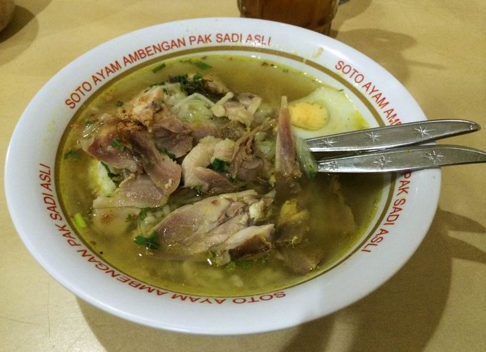
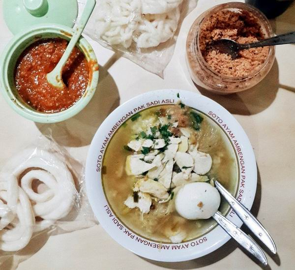
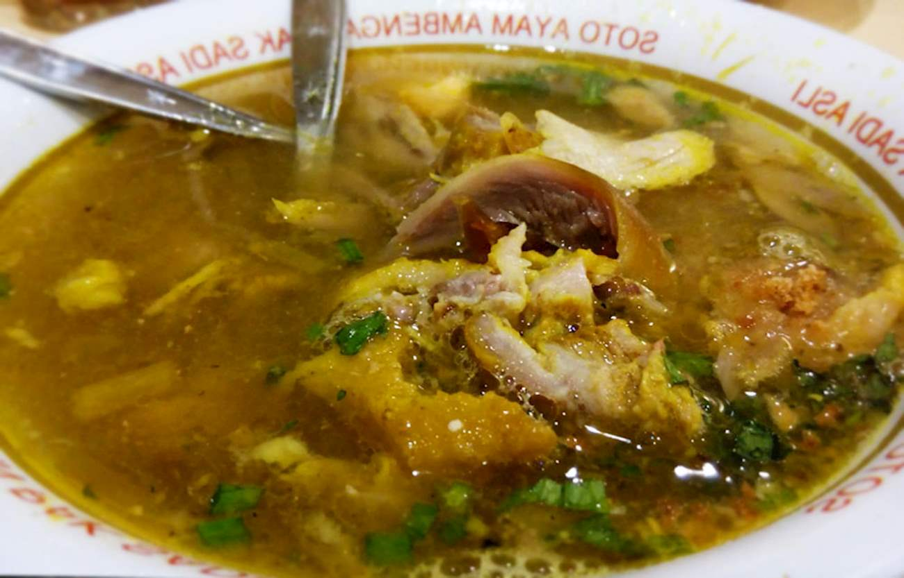

Soto Ayam



Indonesia adalah Negeri 1001 Soto. Hampir setiap daerah
Nusantara memiliki jenis dan karakter soto-nya masing-masing.
Dari sekian banyak varian soto ayam Nusantara, saya harus
memilih soto ayam gaya Lamongan sebagai pilihan favorit saya.
Selapis lebih unggul di atas soto ayam dari Banjarmasin yang
juga tidak kalah gurih.
-- Bondan Winarno, professional foodie, from his book: 100 Maknyus!
Deskripsi
Soto ayam lamongan terdiri atas ayam goreng yang disayat tipis-tipis,
dengan kuah encer bening yang dibuat dari kaldu ayam kampung yang sungguh
gurih, rajangan kol, dan soun.
Topping-nya adalah taburan koya, rajangan daun bawang, dan bawang
merah goreng.
Kondimen-nya adalah sambal, kecap manis, dan sari jeruk nipis.
Koya adalah kerupuk udang goreng yang ditumbuk sampai halus dengan bawang putih
goreng.
Aromanya sangat harum, dan menciptakan sensasi krenyes-krenyes pada
kuah kaldu soto yang gurih.
Comfort food ini mudah disukai siapa saja dan kapan saja.
Resep diambil dari buku 100 Maknyus! oleh Bondan Winarno
Bahan
- 1 ekor ayam kampung
- 6 butir telur ayam > direbus
- 1/4 kol atau kubis > dirajang halus
- 4 batang serai (sereh)
- 6 lembar daun jeruk purut
- 2 lembar daun salam
- 200 gram soun > direndam air panas, tiriskan setelah lunak
- 2 batang daun bawang > dirajang halus
- x bawang merah goreng (secukupnya)
Bumbu
- 8 siung bawang putih
- 5 siung bawang merah
- 5 butir kemiri > disangrai
- 1 kelingking jahe > dibakar
- 1 kelingking kunyit > dibakar
- 2 sdt bubuk merica putih
Langkah
-
Rebus ayam kampung utuh dalam sekitar 3 liter air,
dengan serai, daun salam, daun jeruk purut, dan sedikit garam.
-
Bila sudah empuk, angkat ayam, tiriskan, dan goreng dengan minyak goreng.
-
Bumbu-bumbu dihaluskan dan ditumis dengan sedikit minyak.
Masukkan ke dalam kaldu dan teruskan memasak dengan api kecil.
-
Penyajian: tata soun dan rajangan kol di mangkuk kecil,
masukkan sayatan tipis-lebar ayam goreng, setengah telur ayam rebus,
siram dengan kuah soto, taburi dengan rajangan daun bawang, bawang merah
goreng,, dan koya.
-
Untuk koya, tumbuk 2 kerupuk udang goreng dan 2 sdm bawang
putih, goreng sampai menjadi bubuk halus. Taburkan hanya sesaat
sebelum menyantap soto. Bila terlalu lama terendam kuah panas,
koya akan menjadi lembek dan kehilangan tujuannya sebagai
contrasting texture.
Back to Main Menu